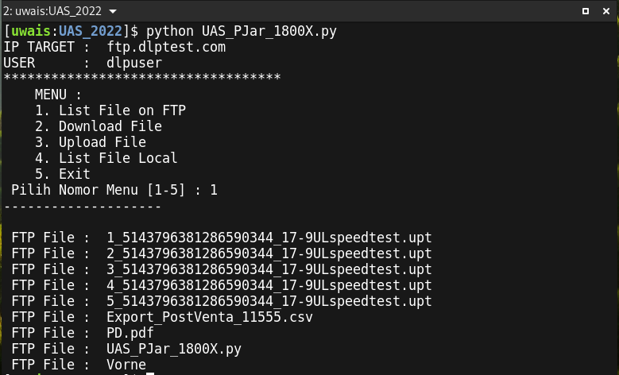

Pemrograman Jaringan UAS
UAS :
| Status | : Online |
| Schedule | : Online |
| Waktu | : 26/01/2022 |
| Tema | : UAS Pemrograman Jaringan |
SOAL UAS :
- LENGKAPI Code dibawah dengan beberapa fungsi yang dapat dipanggil untuk :
- List File on FTP -> melihat file di server FTP
- Download File -> Download file dari server FTP
- Upload File -> Upload file ke server FTP
- List File Local -> Melihat file yang ada di local
- Exit -> Keluar
-
Simpan Code dibawah dengan nama file
UAS_PJar_NPM.py, (ubah NPM dengan 5 digit terakhir NPM anda !).# ---------------------------- # Informatika UMMU Ternate # UAS PEMROGRAMAN JARINGAN 2022 # ---------------------------- ## ************************ ip_target='ftp.dlptest.com' user='dlpuser' pasw='rNrKYTX9g7z3RgJRmxWuGHbeu' ## ************************ print(''' MENU : 1. List File on FTP 2. Download File 3. Upload File 4. List File Local 5. Exit''') pilih = input(" Pilih Nomor Menu [1-5] : ").strip() print("-"*20,"\n") if pilih == "1": LIST_FILE_ON_FTP() elif pilih == "2": dfl = input("Masukkan Nama File yang mau DiDownload : ").strip() DOWNLOAD_FILE(dfl) elif pilih == "3": ufl = input("Masukkan Nama File yang mau DiUpload : ").strip() UPLOAD_FILE(ufl) elif pilih == "4": LIST_FILE_LOCAL() elif pilih == "5": print(" --- EXIT ---\n By..By...") exit() else: print(" --- Pilihan Tidak Tersedia --- ") - Ambil hasil Screenshot (tangkapan layas) dari proses menu nomor 1 dan 3, dan simpan sebagai file gambar
JPGatauPNGdengan masing-masing nama file :UAS_PJar_NPM_3.PNG-> screenshot untuk hasil menu nomor 3 (upload file),UAS_PJar_NPM_1.PNG-> screenshot untuk hasil menu nomor 1 (list file on ftp)
- Baiknya Sesuai urutan, yang pertama dilakukan adalah upload file ke ftp server, kemudian ambil screenshot-nya, setelah itu proses kedua adalah list file on ftp server kemudian ambil screenshot, urutan ini agar file yang anda upload terlihat dalam proses screenshot kedua… (silahkan lihat contoh hasil screenshot yang saya sertakan dibawah).
- JADI, total ada 3 (tiga) file yang anda kirim ke
dropbox, yaitu :UAS_PJar_NPM.py(File Code UAS-nya)UAS_PJar_NPM_1.PNG(File Hasil Screenshot proses 1)UAS_PJar_NPM_3.PNG(File Hasil Screenshot proses 3)
-
Pahami soalnya dan JANGAN TANYA kalau TIDAK PENTING !,
- Selamat mengerjakan dan perhatikan batas waktu, moga lancar dan sukses untuk semua…
Arahan UAS :
- Silahkan Jalankan Codenya untuk di TEST dulu sebelum dikirim.
- Setelah di TEST silahkan upload/kirim ke folder
PJaratau Folder yang biasa anda gunakan untuk kumpul tugas PJaringan pada akundropboxanda masing-masing !. - Diharapkan agar sudah mengumpulkan hasil UAS Pemrograman Jaringan ke folder
PJaratau Folder yang biasa digunakan didropboxnya masing2 padaHari Rabu 26/01/2022.
CONTOH HASIL CREENSHOT :
-
Contoh hasil screenshot proses nomor 1 (list file on FTP server) :

By: ikhwan@fedora-linux